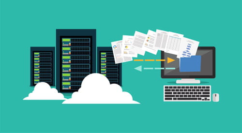
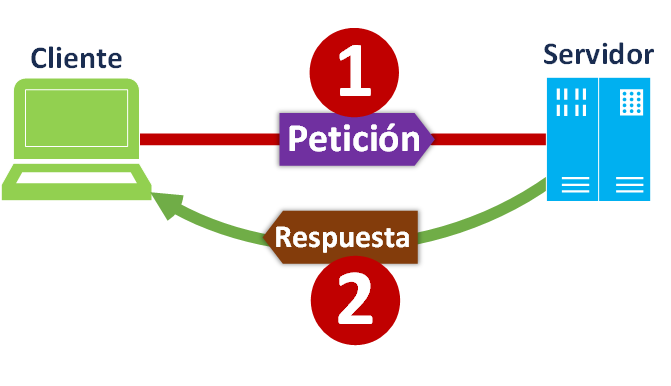
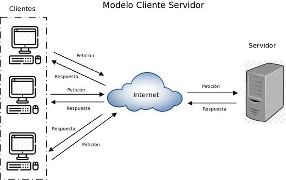

Concepto de Cliente servidor
Que es?...
Que lo compone?...

¿Que es?
Este modelo es uno de los más importantes utilizados en muchísimos servicios y protocolos de Internet, por lo cual para todos esos que desean aprender más sobre la web y cómo funciona, comprender el término de modelo cliente servidor se vuelve algo imprescindible. Se denomina cliente al dispositivo que necesita ciertos servicios a un servidor.
Se llama cliente al dispositivo que requiere ciertos servicios a un servidor. La idea de servidor, por su parte, alude al equipo que brinda servicios a las computadoras que se hallan conectadas con él mediante una red.
El concepto de cliente servidor, o cliente-servidor, refiere por lo tanto a un modelo de comunicación que vincula a varios dispositivos informáticos a través de una red. El cliente, en este marco, realiza peticiones de servicios al servidor, que se encarga de satisfacer dichos requerimientos.Dicho de otro modo: el cliente le pide un recurso al servidor, que brinda una respuesta.
En las redes estructuradas bajo el modelo cliente servidor, los clientes centralizan diferentes aplicaciones y recursos en el servidor. El servidor, a su vez, se encarga de que estos recursos estén disponibles cada vez que un cliente los requiere.
Componentes
Para entender este modelo vamos a nombrar y definir a continuación algunos conceptos básicos que lo conforman.
Red: Una red es un conjunto de clientes, servidores y base de datos unidos de una manera física o no física en el que existen protocolos de transmisión de información establecidos.
Cliente: El concepto de cliente hace referencia a un demandante de servicios, este cliente puede ser un ordenador como también una aplicación de informática, la cual requiere información proveniente de la red para funcionar.
Servidor: Un servidor hace referencia a un proveedor de servicios, este servidor a su vez puede ser un ordenador o una aplicación informática la cual envía información a los demás agentes de la red.
Protocolo: Un protocolo es un conjunto de normas o reglas y pasos establecidos de manera clara y concreta sobre el flujo de información en una red estructurada.
Servicios: Un servicio es un conjunto de información que busca responder las necesidades de un cliente, donde esta información pueden ser mail, música, mensajes simples entre software, videos, etc.
Base de datos:Son bancos de información ordenada, categorizada y clasificada que forman parte de la red, que son sitios de almacenaje para la utilización de los servidores y también directamente de los clientes.

Diferencias entre cliente y servidor
El cliente es un computador pequeño con una composición al igual a la que poseemos en nuestras propias oficinas u domicilios la cual accede a un servidor o a los servicios del mismo por medio de Internet o una red interna.
Un claro ejemplo a este caso es la forma en que trabaja una empresa modelo con diferentes computadores donde cada uno de ellos se conectan a un servidor para poder obtener archivos de una base de datos o servicios ya sea correos electrónicos o aplicaciones.
